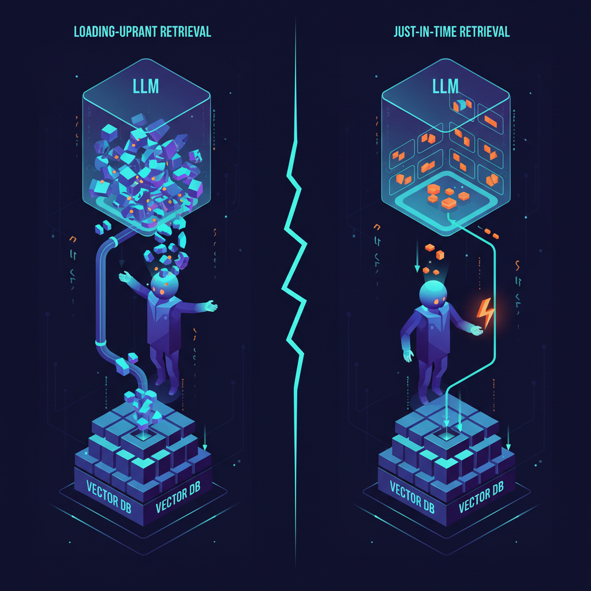

Você já usou um AI assistant e recebeu resposta que ficou off? Reescreveu a pergunta, adicionou "think step by step", deu mais detalhe. Às vezes ajudou. Às vezes não.
Esse tipo de tentativa e erro é prompt engineering. Pra tarefas simples, basta. Mas no momento que você pede algo mais complexo, fraseado raramente é o problema principal.
Mais frequente: o modelo está trabalhando com a informação errada. Algo importante está faltando, enterrado na conversa, ou misturado com texto irrelevante. O resultado parece confusão — o modelo perde o fio, faz suposições frágeis, responde com confiança sem fundamento sólido.
É aqui que context engineering entra. Em vez de perguntar "como reformulo isso?", você pergunta: "que informação o modelo deveria ver agora?"
Como Andrej Karpathy, um dos founders da OpenAI, define:
"A arte e ciência delicada de preencher a context window com exatamente a informação certa pro próximo passo."
Este post é adaptação enriquecida em PT-BR do "Context Engineering 101" de Neo Kim e Louis-François Bouchard, com adições de patterns atuais (Anthropic context engineering, compaction, sub-agents), ferramentas e exemplos práticos de implementação.
O que é "context"?
Quando você manda uma mensagem pra um AI assistant, ele não vê só a sua pergunta. Vê todo o pacote estruturado:
- System prompt: instruções que guiam o comportamento do modelo.
- Conversation history: partes relevantes da conversa até agora.
- Few-shot examples: exemplos que você (ou o produto) fornece.
- Tool outputs: resultados de tools chamadas.
- Retrieved documents: chunks de RAG.
- User message atual: a sua query agora.
Tudo isso junto é o context.
Por que importa? Porque o modelo não tem memória de longo prazo como humano. Não consegue lembrar de conversas passadas a menos que aquela informação seja incluída de novo. Cada resposta é gerada exclusivamente a partir do context atual.
E o modelo só presta atenção numa quantidade limitada de texto por vez — a famosa context window. Jogar mais informação dentro desse espaço frequentemente piora respostas, não melhora.
Context rot — o problema que escala com tempo de tarefa
Em agents que rodam tarefas multi-step, cada step gera nova informação que é adicionada ao que o modelo vê depois — search results, summaries, intermediate notes. Ao longo do tempo, o context cresce, e muito dele deixa de ser relevante pro step atual.
Isso chama context rot: informação útil fica enterrada sob detalhes outdated. Pesquisa da Chroma (2024) mostra que mesmo modelos com context window de 1M tokens degradam performance significativamente quando o context fica acima de 30-50K tokens.
A regra prática: encontre o mínimo de informação alto-valor necessária — mais context nem sempre é melhor.
A anatomia do context — o que vai onde
System Prompt
Determina o comportamento geral do modelo. Define como o assistente deve agir, regras a seguir, formatos de resposta esperados. Geralmente você não vê — é definido pelo produto.
É por isso que dois assistants no mesmo modelo subjacente se comportam tão diferente. ChatGPT tende a responder educadamente, recusar certos pedidos, formatar de maneira previsível — tudo isso vem do system prompt, mesmo quando você nunca pediu explicitamente.
Princípio prático pra construir features AI: comece minimalista, teste com use cases reais, adicione regras só quando ver falhas específicas. Sistema prompt rígido demais → modelo brittle. Vago demais → respostas inconsistentes.
Few-shot examples
Às vezes a forma mais clara de guiar o AI é mostrar o que você quer. Em vez de escrever lista longa de regras, inclua 1-2 inputs de exemplo com os outputs exatos esperados.
Você provavelmente já fez isso no ChatGPT sem perceber: "Formate assim:" + colar exemplo. O modelo geralmente segue o padrão.
Exemplos removem ambiguidade. Mostram tom, estrutura, nível de detalhe de forma que instruções não conseguem. Trade-off: ocupam espaço na context window. Poucos exemplos bem escolhidos > lista longa.
Message history
Em chat, o modelo responde a perguntas de follow-up porque mensagens anteriores ficam no context. Pergunta "Capital da França?" → "População?". O modelo infere que ainda é sobre Paris.
Funciona porque a conversa até agora age como scratch paper compartilhado. O modelo não lembra de verdade — está lendo de novo como input.
Problema: history cresce. Mensagens velhas ocupam espaço mesmo quando irrelevantes. Modelo fica menos focado, repete, segue assunções outdated. Gerenciar history = manter o que é relevante, summarizar o que está resolvido, deixar o resto cair.
Tools
Sozinho, LLM só gera texto. Tools permitem mais: buscar na web, ler documentos, rodar código, query database, interagir com sistemas externos. Quando uma tool é chamada, o resultado é alimentado de volta no context.
Tools são poderosas, mas toda tool call adiciona texto que compete por atenção. Se uma tool retorna informação demais ou em formato confuso, sobrecarrega o modelo.
Bom design: nomes claros, responsabilidades estreitas, outputs concisos. Anthropic publicou guia canônico sobre "writing tools for agents" que cobre exatamente isso.
Data (documentos, files)
Agents frequentemente trabalham com dados externos. Documento que você fez upload, artigo colado, files acessíveis. Quando incluso, vira parte do context.
Documentos grandes não se comportam como você espera. Modelo pode focar na seção errada ou perder detalhes. É problema de context management, não descuido. Solução: quebrar em pedaços, puxar só o relevante pro step atual, deixar o resto fora.
Estratégias de retrieval — loading upfront vs just-in-time

Loading upfront (RAG clássico)
Recupera informação relevante antes de o modelo começar a responder, e inclui tudo de uma vez. É o que acontece quando ChatGPT busca na web e depois escreve resposta usando os resultados.
Funciona bem quando a pergunta é clara e o agent consegue prever que informação vai ser útil. Downside: agent toma decisão de retrieval cedo e fica preso. Se algo importante está faltando ou a tarefa muda de direção, é mais difícil corrigir.
Just-in-time retrieval
Recupera informação conforme a tarefa se desenrola. Em vez de carregar tudo no início, agent dá um passo, olha o que aprendeu, e recupera mais só quando precisa.
Você vê isso no ChatGPT em tarefas longas — ele busca, lê, refina a query, busca de novo. Context fica mais limpo (só puxa o necessário). Trade-off: mais steps, exige que o agent decida quando recuperar e quando parar.
Progressive Disclosure
Pattern dentro de just-in-time: começa amplo e drilla down. Em vez de carregar documentos inteiros imediatamente, agent começa com snippets curtos ou summaries, identifica o que parece relevante, e só então puxa o detalhe.
É como humano faz pesquisa: você não lê todos os artigos do banco. Você escaneia títulos, lê abstract dos promissores, mergulha só nas fontes que importam.
Estratégia híbrida (a que ganha)
Maioria dos agents em produção combina os dois. Carrega quantidade pequena de baseline upfront (regras, persona, contexto de usuário), recupera mais conforme precisa.
É o que ChatGPT, Claude, Cursor e similares fazem. Algumas instruções e history já estão presentes, informação adicional é puxada baseado no que você pede.
Técnicas pra tarefas long-horizon
Tarefas que rodam o suficiente pra agent produzir mais texto que cabe no context window exigem técnicas extras:
1. Compaction (summarization)
Comprime conversation history mais antiga num resumo curto. Cursor, Claude Code, e ChatGPT (modo "Memory") fazem isso automaticamente. Você perde detalhes específicos mas ganha mais espaço pra trabalho atual.
Implementação típica: a cada N turnos ou ao atingir M tokens, dispara LLM separado que sumariza os turnos mais antigos. Substituído no context pela versão summary.
2. Sub-agents (delegation)
Em vez de um agent monolítico carregando tudo, agent principal delega sub-tarefas pra sub-agents com contexts próprios isolados. Sub-agent termina, retorna resumo, agent principal incorpora.
É o pattern do Claude Code com Task tool, Cursor com agents, e LangGraph com graph orchestration. Cada sub-agent só vê o context que precisa.
3. External memory (scratch pads, notes)
Agent escreve notas em armazenamento externo (arquivo, vector DB, Redis) durante a tarefa, e re-lê seletivamente quando relevante. Em vez de carregar tudo no context, mantém referência leve.
Coberto em profundidade no post sobre memória de agents: Mem0, Zep, AGENTS.md.
4. Context reordering
Coloca informação crítica no início e no fim do prompt, evitando o meio. Lembre-se do efeito "lost in the middle" (Liu et al., 2023): modelos prestam menos atenção em conteúdo no meio do context.
Pattern prático: system prompt → few-shot → message history (mais antigo → mais novo) → tool results → query atual no final.
Patterns avançados que estão emergindo
Anthropic's "Context Engineering" framework
Anthropic publicou framework próprio em 2024 que sistematiza 4 técnicas: compaction, structured note-taking, sub-agent architectures, e just-in-time context. Influência forte no design do Claude e do Claude Code.
Context engines (Augment, Cursor, Codeium)
Em vez de você gerenciar context manualmente, ferramentas modernas têm context engines que indexam o seu codebase inteiro e injetam só o relevante pra cada query. Augment Code, Cursor, Codeium, Sourcegraph Cody — todos fazem isso. É a diferença entre autocomplete e raciocínio sobre arquitetura.
Skill-based loading (Anthropic Skills, Claude Code)
Skills (arquivos markdown + scripts opcionais) carregados sob demanda baseado em palavras-chave. Em vez de gigantesco system prompt com tudo, só a skill relevante entra no context.
Pattern do Dev Team Kit que mantenho — skill carregada só quando uma palavra de gatilho aparece. Reduz context overhead em 70-90%.
Erros comuns que vejo
- Dump-everything pattern: jogar repo inteiro no prompt. Context window enorme não substitui curadoria.
- System prompt inflado: 5K tokens de regras que ninguém lê. Comece com 200, adicione só após falha real.
- Tool output verboso: tool retorna 50KB de JSON. Filtre e formate antes de enviar de volta ao modelo.
- History sem compaction: agent loop infinito consumindo tokens. Adicione compaction a cada 20 turnos ou 30K tokens.
- RAG sem rerank: 20 chunks vector search puro vira ruído. Use cross-encoder pra ranquear.
- Documento inteiro no prompt: PDF de 100 páginas → modelo perde. Quebre em chunks + retrieval.
Stack pra fazer context engineering bem
- RAG framework: LangChain, LlamaIndex, ou Haystack.
- Vector DB: pgvector → Qdrant/Weaviate → Pinecone (ver post sobre vector databases).
- Reranker: Cohere Rerank ou BGE Reranker.
- Memory: Mem0, Zep, ou AGENTS.md pra agents persistentes.
- Orchestration: LangGraph (delegation + state) ou CrewAI.
- Observability: LangSmith ou Langfuse pra ver exatamente o que entra no context window.
- Eval: Ragas pra medir context precision/recall.
Conclusão
Prompt engineering te leva a uma performance OK. Context engineering te leva ao top 1% do que LLMs conseguem fazer. A diferença entre um chatbot que parece esperto e um agent que de fato resolve tarefas complexas é quase sempre o que está (e não está) na context window naquele momento.
A pergunta certa nunca foi "como reformulo essa pergunta?". É "que informação o modelo precisa ver agora — e o que não precisa estar lá?". Quando você começa a pensar assim, sua relação com LLMs muda completamente.
Fonte original: "Context Engineering 101: How ChatGPT Stays on Track" por Neo Kim e Louis-François Bouchard, publicado em The System Design Newsletter em 19 de dezembro de 2025. Esta adaptação em PT-BR enriquece com Anthropic context engineering framework, context engines modernos (Augment, Cursor), skill-based loading, e armadilhas de produção. Recomendo fortemente o artigo da Anthropic sobre context engineering e o paper sobre context rot da Chroma.